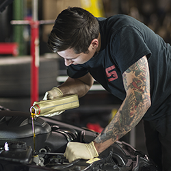
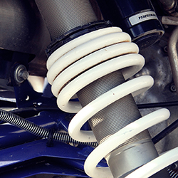
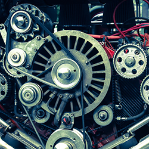
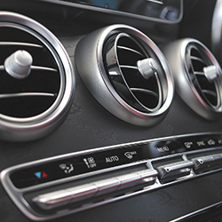
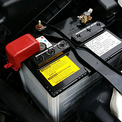
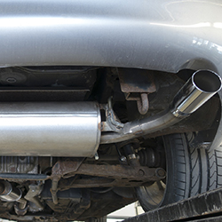
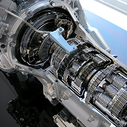
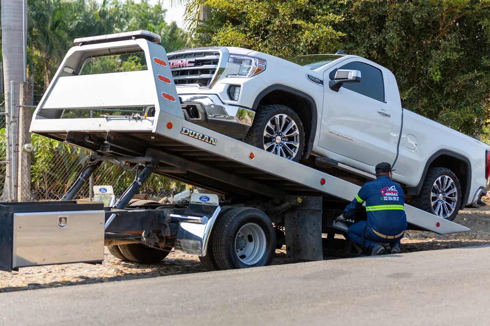
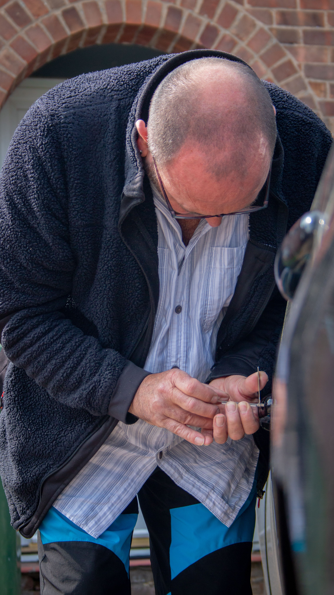
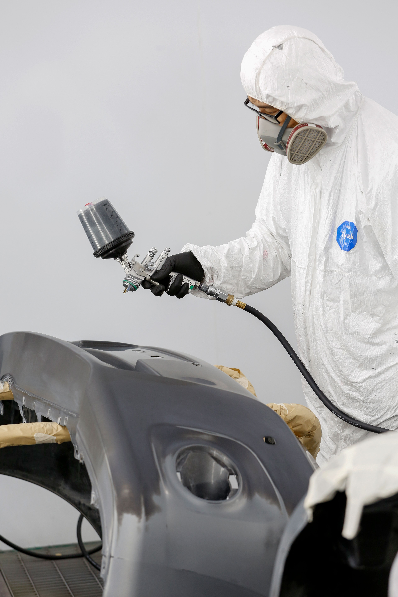

Full service shop
Repairs, maintenance and towing.
Complete auto repair services in Escondido, from routine maintenance and diagnostics to drivetrain work, electrical repair, tires and local towing.

Routine MaintenanceMaintenance
Maintenance & Diagnostics
- Factory scheduled maintenance
- 30k, 60k, 90k and 120k mile services
- Computer diagnostics
- Oil changes
- Tune ups
- Filter replacements
- Safety and emissions inspections
- Windshield wiper blades
- Fluid services
- Trip inspections
- Maintenance inspections
- Check engine light diagnostic

Suspension & HandlingChassis
Brakes, Steering & Suspension
- Brake service
- Shocks and struts repair
- Chassis and suspension repair
- Suspension and steering repair
- Struts, shocks and suspension service
- Wheel and handling related diagnosis

Engine ServicePowertrain
Engine & Cooling
- Engine repair
- Engine replacement
- Engine performance check
- Belt replacement
- Hose replacement
- Cooling system repair
- Radiator repair and replacement
- Water pump repair and replacement
- Drivability diagnostics and repair
- Fuel injection repair and service
- Fuel system repair and maintenance
- Ignition system repair and maintenance

Climate ControlComfort
Heating & Air Conditioning
- Heating and cooling system diagnostics
- Auto air conditioning repair and service
- Heating system repair and service
- Belt repair and replacement
- Compressor repair and replacement

Battery & ElectricalElectrical
Electrical Systems
- Electrical system diagnostics and repair
- Alternator repair and replacement
- Starter repair and replacement
- Windshield wiper repair
- Power lock repair
- Power antenna repair
- Power steering repair
- Power window repair
- Light repair and bulb replacements

Exhaust SystemsExhaust
Exhaust & Muffler
- Exhaust repair and replacement
- Muffler repair and replacement
- Tailpipe repair and replacement

Transmission ServiceDrivetrain
Transmission
- Transmission repair and overhaul
- Transmission maintenance and service
 Tire Service
Tire ServiceTires
Tires & Tire Repair
- New tire replacement
- Flat tire repair
- Tire rotation and balancing
- TPMS diagnosis and sensor service
- Tire inspections
- Schedule tire replacement →

Roadside AssistanceRoadside
Towing & Roadside Assistance
- Local towing
- Roadside assistance
- Vehicle recovery help
- Call the shop for current availability

Vehicle AccessKeys & Lockouts
Locked Out? Need Key Help?
- Vehicle lockout assistance
- Automotive locksmith service
- Ignition and key related service
- Call for availability and vehicle compatibility

Paint & BodyExterior
Paint & Body Work
- Paint and body service
- Exterior cosmetic repair
- Body damage assessment
- Call or schedule an appointment to discuss the vehicle
C & D currently lists a $130 diagnostic fee to inspect a vehicle and determine needed repairs. Call the shop for current pricing and availability.